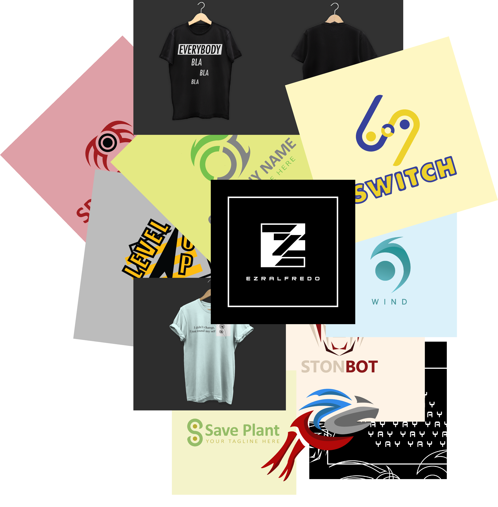

Tujuanku
Desainer Grafis
Jadi orang yang ngerti desain itu asik. Saya akan terus mempelajari desain karena saya percaya pada era sekarang ini, tenaga desain sngat diperlukan dalam perusahaan maupun hal-hal lain
Tech n Design Fusion
Saya percaya seemua ilmu yang didapat sangatlah bermanfaat. Memadukan antara ilmu informatika dengan desain menurut saya merupakan kombinasi yang tepat untuk masa depan.
Skill


Dua software ini merupakan software adobe yang paling saya kuasai. Jika disuruh memilih saya lebih suka Adobe Ilustrator.